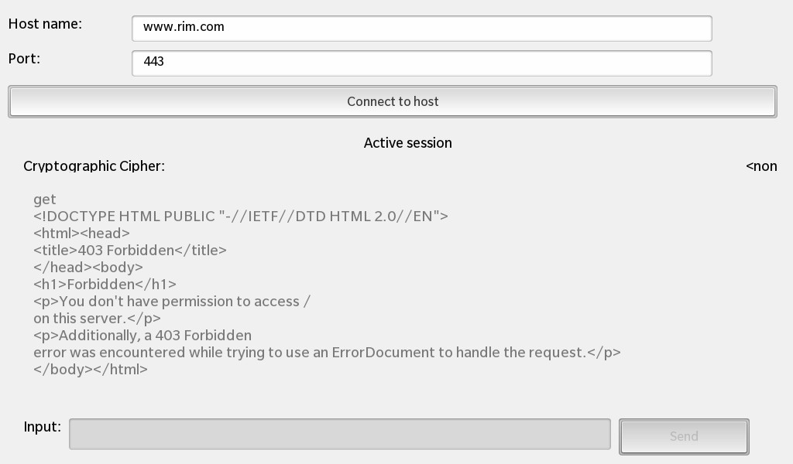
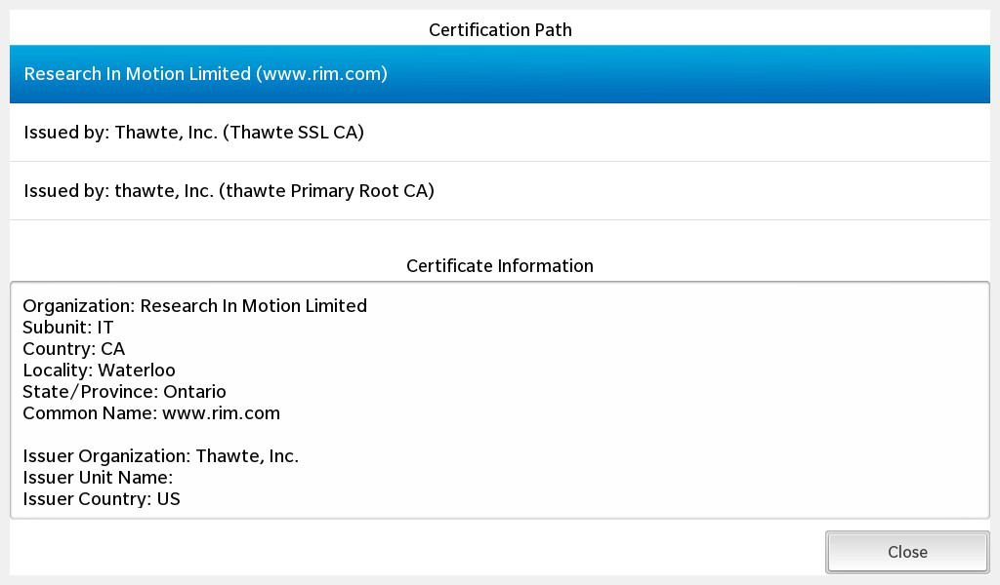

Files:
The Secure Socket Client example shows how to use QSslSocket to communicate over an encrypted (SSL) connection. It also demonstrates how to deal with authenticity problems, and how to display security and certificate information.
The following screenshot shows a connection established with a Web server. The string "GET" was sent.

The following screenshot shows the certificate chain of the Web server.

In this example we'll learn how to use the QSslSocket class to set up an secured network connection and how to use the QSslCertificate class to retrieve information about the certificates that are involved in the secured connection.
The UI of this sample application consists of the main view (MainView.qml), an error dialog (SslErrorView.qml) and a certificate info dialog (CertificateInfoView.qml). In the main view the user can type in a host name and a port number and click the 'Connect to host' button to set up a secured connection to the given host. If the server certificate could not be validated, the error dialog shows up where the user can either ignore the error and continue or terminate the connection. After the connection has been established, an input text field and the 'Send' button in the main view become enabled and the user can send commands over the encrypted connection. Next to the host name input field an lock icon will appear that the user can click to bring up the certificate info dialog.
The business logic of the application is encapsulated in the class SslClient, which is exported to the UI as '_sslClient'.
// A container is used to gather visual items together. Container { layout: DockLayout {} // The background image ImageView { horizontalAlignment: HorizontalAlignment.Fill verticalAlignment: VerticalAlignment.Fill imageSource: "asset:///images/background.png" } // Main application control view MainView { horizontalAlignment: HorizontalAlignment.Fill verticalAlignment: VerticalAlignment.Fill } // Displays any ssl errors. SslErrorView { horizontalAlignment: HorizontalAlignment.Fill verticalAlignment: VerticalAlignment.Fill visible: _sslErrorControl.visible } // Displays certifacte information CertificateInfoView { horizontalAlignment: HorizontalAlignment.Fill verticalAlignment: VerticalAlignment.Fill visible: _certificateInfoControl.visible } Container { horizontalAlignment: HorizontalAlignment.Fill verticalAlignment: VerticalAlignment.Fill visible: false } }
The main.qml contains a container with a DockLayout where the main view, error dialog and certificate info dialog are stacked on top of each other. The two dialogs are hidden by default and will only be visible if the bound 'visible' property of their controllers (exported C++ objects) become true.
Whenever the user types in a host name, the 'hostName' property of the SslClient object is updated.
// A standard TextField TextField { verticalAlignment: VerticalAlignment.Center leftMargin: 10 rightMargin: 5 layoutProperties: StackLayoutProperties { spaceQuota: 1 } hintText: qsTr ("Enter host name") text: "www.blackberry.com" inputMode: TextFieldInputMode.Url // Save url on input onTextChanging: _sslClient.hostName = text }
If the user clicks the 'Connect to host' button, the secureConnect() slot of the SslClient object is invoked.
// A standard Button Button { horizontalAlignment: HorizontalAlignment.Fill topMargin: 30 bottomMargin: 10 maxHeight: 100 text: qsTr ("Connect to host") // Connect to url on click onClicked: _sslClient.secureConnect () }
The SslClient encapsulates the business logic of this application. It handles the low-level communication with the server via QSslSocket and mediates the input and output with the UI.
In the constructor we create a SslErrorControl object, which controls the state of the error dialog, and connect its signals against the private slots of SslClient to be informed about user input from the error dialog.
SslClient::SslClient(QObject *parent) : QObject(parent) , m_socket(0) , m_sslErrorControl(new SslErrorControl(this)) , m_hostName("www.blackberry.com") , m_port(443) , m_sessionActive(false) , m_cipher("<none>") { // User input to the SSL error dialog is forwarded to us via signals connect(m_sslErrorControl, SIGNAL(ignoreSslErrors()), this, SLOT(ignoreSslErrors())); connect(m_sslErrorControl, SIGNAL(viewCertificateChainRequested()), this, SIGNAL(viewCertificateChainRequested())); }
Whenever the user clicks the 'Connect to host' button, the secureConnect() slot of the SslClient object is invoked.
void SslClient::secureConnect() { if (!m_socket) { // Create a new SSL socket and connect against its signals to receive notifications about state changes m_socket = new QSslSocket(this); connect(m_socket, SIGNAL(stateChanged(QAbstractSocket::SocketState)), this, SLOT(socketStateChanged(QAbstractSocket::SocketState))); connect(m_socket, SIGNAL(encrypted()), this, SLOT(socketEncrypted())); connect(m_socket, SIGNAL(sslErrors(QList<QSslError>)), this, SLOT(sslErrors(QList<QSslError>))); connect(m_socket, SIGNAL(readyRead()), this, SLOT(socketReadyRead())); } // Trigger the SSL-handshake m_socket->connectToHostEncrypted(m_hostName, m_port); updateEnabledState(); }
Inside this method we create a QSslSocket object (if it doesn't exists yet) and connect against its signals to be informed about state changes (e.g. connection established or peer closed connection), when the SSL-handshake has finished and when new data arrived over the network.
The call to connectToHostEncrypted() on the QSslSocket object starts the actual SSL-handshake.
void SslClient::socketStateChanged(QAbstractSocket::SocketState state) { if (m_sslErrorControl->visible()) return; // We won't react to state changes while the SSL error dialog is visible updateEnabledState(); if (state == QAbstractSocket::UnconnectedState) { // If the SSL socket has been disconnected, we delete the socket m_cipher = "<none>"; emit cipherChanged(); m_socket->deleteLater(); m_socket = 0; } }
The socketStateChanged() slot is invoked whenever the QSslSocket notifies a state change. Inside this slot we update the connection state properties (done inside updateEnabledState()) and if the peer disconnected, we clean up the QSslSocket object.
void SslClient::socketEncrypted() { if (!m_socket) return; // Might have disconnected already // We started a new connection, so clear the response from previous connections m_response.clear(); emit responseChanged(); // Retrieve the information about the used cipher and update the property const QSslCipher cipher = m_socket->sessionCipher(); m_cipher = QString("%1, %2 (%3/%4)").arg(cipher.authenticationMethod()) .arg(cipher.name()) .arg(cipher.usedBits()) .arg(cipher.supportedBits()); emit cipherChanged(); // Tell the CertificateInfoControl about the certificate chain of this connection emit certificateChainChanged(m_socket->peerCertificateChain()); }
The socketEncrypted() slot is invoked after the SSL-handshake has succeeded. Inside this slot we retrieve the information about what cipher is used for the secured connection and we make the certificate information available to the certificate info dialog via a signal/slot connection.
The CertificateInfoControl represents a dialog that shows information about the certificate provided by the server and the certificate chain. It manages the 'visible' property of the dialog and provides a Cascades DataModel with the certificate information that can be plugged into a ListView in the UI.
void CertificateInfoControl::setCertificateChain(const QList<QSslCertificate> &chain) { m_chain = chain; // Clear the model ... m_model.clear(); // ... and add a new entry for each certificate from the chain to the model for (int i = 0; i < m_chain.size(); ++i) { const QSslCertificate &cert = m_chain.at(i); const QString chainInformation = tr("%1%2 (%3)").arg(!i ? QString() : tr("Issued by: ")) .arg(cert.subjectInfo(QSslCertificate::Organization)) .arg(cert.subjectInfo(QSslCertificate::CommonName)); m_model.append(chainInformation); } // Pre-select the first certificate in the list setCurrentCertificate(QVariantList() << QVariant(0)); } bb::cascades::DataModel* CertificateInfoControl::model() const { return const_cast<bb::cascades::QListDataModel<QString>*>(&m_model); }
The setCertificateChain() method is invoked after the SSL-handshake succeeded. The passed list of QSslCertificate objects represents the certificate chain that is used to secure this connection. We iterate over the list and extract all important information that we store inside a QListDataModel. This data model is made available as property, so that it can easily be used within the UI as data source for a ListView.